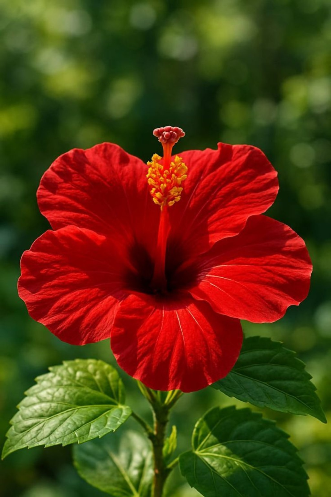

Dosni Phool (Hibiscus)
Local Name: Dosni Phool (दोस्णे फुल) / Dashini
Uses of Hibiscus
- Hair Care: Promotes hair growth and reduces dandruff (used in hair oils).
- Worship: Offered to Lord Ganesha and Goddess Kali during puja.
- Health: Hibiscus tea helps control blood pressure and digestion.
Care Tips
- Sunlight: Needs 6 hours of direct daily sunlight.
- Watering: Water only when the top soil feels dry.
- Soil: Use well-draining soil mixed with compost.
- Fertilizer: Feed every 4–6 weeks during spring and summer.
- Pests: Spray neem oil to remove mealybugs and aphids.